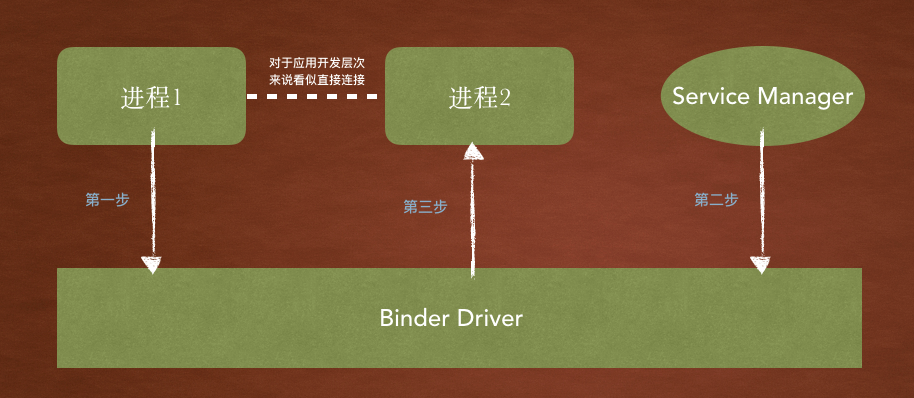
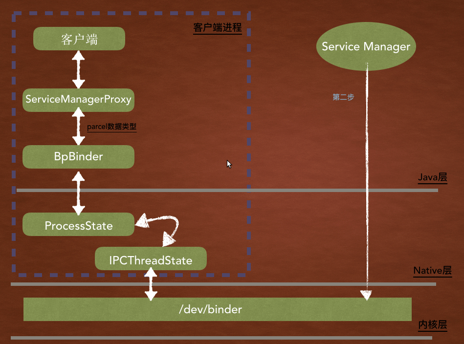

说一说你对Binder的理解…
Binder为何存在
在日常代码编写中. 我们总是会理所应当的对函数进行调用, 对变量进行访问. 之所以能顺利访问时因为所有的函数和变量都在同一个进程之中. 也就是说因为在一个内存空间中. 虚拟地址的映射规则完全一致. 而如果想访问的是其他进程的函数或者变量, 是不可能直接通过内存地址来直接进行访问的.
既然进程之间不能访问, 那么如果通过间接的方法建立一条通道应该就可以解决了问题. 而Binder就是这样一个东西.
Binder是Android中使用最广泛的IPC(Inter Process Communication)进程间通信机制.
例如. 比如访问手机短信,联系人, startActivity()编写项目时我们新建一个界面, 服务,广播,内容提供者. WMS窗口管理所有View的显示删除等等. 几乎可以说Binder相当于人体的心脏可以让血液传输到各个地方提供声明的持续的保障.
Binder体系结构
由于Google对Binder封装的很好. 以至于我们都不容易发现它的存在. 并且因为Binder机制涉及的东西即多又杂,往往会走错路.
那么通过一个大体的执行流程, 和场景对比. 可以加深对整体的认知.
Binder体系有四个组成元素. 和网络中TCP/IP很相似,如下对应关系
| Binder体系 | TCP/IP |
|---|---|
| Binder驱动 | 路由器 |
| Service Manager | DNS |
| Binder Client | 客户端 |
| Binder Server | 服务器 |
比如我们需要访问www.baidu.com.那么四个角色的大体流程是这样的.
客户端输入网址告诉路由器我要查询域名www.baidu.com.路由器此时不知道域名对应的ip地址所以需要到DNS去查询对应的IP并告知路由器路由器在接收到返回的IP地址时会相应的返回给客户端客户端拿到IP地址再对路由器进行IP连接的发送请求.路由器会连接到对应的服务器并建立连接返回给客户端
这里需要注意DNS其实本质上也是一个服务器, 只不过这个服务器比较特殊. 它可以提供域名与IP的对应关系, 并且其本身的IP地址提前就已经预设好的(客户端是知道DNS的IP).
Binder的原型结构如下图:

总结上图那么就是: 进程1(Client)需要访问进程2(Server), 需要借助Binder驱动来把请求传递到进程2中. 而参与通信的进程们需要持有Binder分配的唯一标识, 而这个唯一标识被保存到SM(Servier Manager,后面简称SM)中. 所以如果进程1想通过Binder Driver进行访问要知道进程2的binder标识所以需要先对SM进行查询相当于网络中DNS查询. 通过查询到标识来进行最终的请求.
之前说过DNS也相当于服务器, 只不过比较特殊, 因为对于Client是预先知道其IP地址的. 那么SM作为功能相同的DNS, 其对应的Binder标识. 对于其他Client进程来说同样是预先知道的. 因为Service Manger在Binder通信过程中的Binder标识永远是0.
组成元素之Binder驱动
关于Binder驱动稍微了解即可.
由于Android系统是基于Linux内核的, 所以Binder驱动也必须是一个标准的Linux驱动. 也就是Binder Driver会将自己注册成一个misc device并向上层提供一个/dev/binder节点. (注意: Binder节点并不对应真实的硬件设备, Binder驱动运行于内核态)
那么为什么把Binder注册成一个misc device类型的驱动?
Linux中的字符设备通常要经过alloc_chrdev_region(),cdev_init()等一系列操作才能在内核中注册完成. 而misc类型驱动则比较简单, 只需要调用misc_register()既可以完成.
例如上图进程1要访问Binder Driver时,通常要做如下操作:
- 打开
Binder驱动. 通过Binder.c#binder_open()打开 - 与
Binder驱动建立连接. 通过binder_mmap().mmap()可以把设备指定的内存块直接映射到应用程序的内存空间. (应用程序通过mmap()获得的虚拟内存地址和Binder中指针指向的虚拟内存地址经过转换其实都指向一个物理地址, 这也是Binder驱动只用了一次复制就可以实现进程间的数据共享的原因) - 建立连接之后当然就是操作驱动.
Binder并没提供常规文件操作如read(),write()等. 而是用了一个更强大的接口函数binder_ioctl().
组成元素之ServiceManager
首先要知道SM的重要性. 当手机开机的时候会注册许多的系统服务来撑起整个手机的运行. 如ActivityManagerService, InputManagerService,WindowManagerService等等. 在之后我们开发的app启动的显示界面, 播放声音, 打开界面等等都是需要先获取系统服务才可以进行后续的操作. 而这些所有的操作都必须要经过SM才可以获取到. SM是一个完成的映射表有了这个表我们可以去找任何一个手机里面的任何一个服务.
既然把SM比作DNS并且SM本身也是一个Binder Server服务端, 只不过这个Binder标识为0(相当于IP地址). 我们在任何地方都可以通过binder id = 0来向Binder驱动获取到SM, 通过SM查询各种系统的服务来得到对应的binder标识(IP)来进行具体的系统服务互动.
Service Manager的启动
由于SM的重要性,以及前提性. 我们可以大概猜出其应该尽可能在系统启动的最开始就进行加载. 那么Android系统的启动首先加载的就是init.rc.
从这个文件可以得到的信息是: 一旦当SM系统发生异常之后重启, 那么其他的系统服务如zygote,media,surfaceflinger等也会重启.
SM用的C/C++编写, 和其他系统服务用Java编写略有不同.
Service Manager的构建
当SM启动了之后, 首先做了如下的事情:
- 打开
Binder设备, 进行初始化 - 通过
ioctl()命令注册flag为BINDER_SET_CONTEXT_MGR来让自己成为系统的管理者. 并生成了在Binder驱动中对应的Binder Id = 0 - 然后通过循环开始等待
客户端的请求.
Service Manger的获取
既然这个SM这个服务管家已经构建完毕并且等待着被其他客户端使用. 那么就以SM为服务端. 走一遍client客户端去访问server服务端的流程.
虽然
SM是基于native实现的, 但是由于Binder Client和Binder Server都是围绕着Binder驱动展开的, 因而只要能正确使用Binder驱动. 何种语言并不是固定的.
想要访问SM其实主要流程就是如下三步
- 打开
Binder设备, 执行mmap - 通过
Binder驱动向SM发送请求. (SM的binder handler = 0) - 获取最终结果
如果你看过Binder类你可能看到很多的比较别扭的术语asBinder,asInterface, BpBinder, transaction,IBinder等. 不需要死记这些东西, 因为这些都是都是从如何提供Binder Server服务这个问题而衍生的解决方案. 顺着主干线即一点点理解即可.
试想一下如果我们需要设计Client客户端应该怎么做?
ProcessState和IPCThreadState
我们需要一个类来专门管理每个应用进程中的Binder操作, 而且关于Binder驱动的一系列命令对上层用户应该是透明的, 这个类对应的就是ProcessState.
并且进程中的每一个线程都应该有与Binder驱动自由沟通的能力, 并且由于Binder的IPC通信是阻塞的, 所以可以保证个别线程在做进程间的通信的时候不会卡死整个应用程序. 所以IPCThreadState就是与Binder驱动进行实际命令的通信的类.
proxy
虽然通过ProcessState和IPCThreadState就可以让Client与Binder驱动进行通信了, 但是更好的方法是进行进一步的封装. 代理的出现可以让操作SM更加的简单, 封装成ServiceManagerProxy自后. 就可以提高模块与其他模块的无关性和便利性.
还记得这样的代码片段么
getService("window"); |
这样对于上层来说, 只需要接收要获取的服务端字符串名称即可.
既然是代理, 那么ServiceManagerProxy(用户进程)和ServiceManager应该具有相同的功能, 所以就可以向上提取出IServiceManager接口添加接口函数getService(),addService()等共同的函数.
那么IServiceManager接口的实现就需要完成
- 与
Binder建立关系, 由于进程中存在ProcessState和IPCThreadState专门负责与Binder驱动通信(Native层), 而Java层基于上面两个类的实现称为BpBinder. - 向
Binder发送命令, 获取SM提供的服务
整理成一张图就是如下.

该图描绘了Binder模型中的上层建筑.
但是我们在获取服务的时候是使用的ServiceManager.java这个类, 这个类其实是ServiceManagerProxy的进一步封装.
getSystemService(WINDOW_SERVICE); |
当在代码中获取服务的时候. 内部首先查询缓存, 是否存在记录, 如果没有则会发送一条查询请求. 在请求过程中如果是第一次使用SM. 那么会调用ServiceManagerNative.asInterface(BinderInternal.getContextObject())获取一个IServiceManger. asInterface函数会将一个Binder对象转换成IServiceManager
整理成两步就是:
- 查询进程本地是否已经有了
IServiceManager - 如果没有 那么就新建一个
ServiceManagerProxy
既然最后转到了ServiceManagerProxy的getService(String name). 那么内部实现也就很明确了.
- 通过
Parcel打包数据. - 利用
IBinder#transact()将请求发送出去, 内部就是使用封装好的native层的ProcessState和IPCThreadState来进行与驱动的通信. transact()函数之后, 就可以获取到结果. 同socket相似, 这是一种阻塞的函数调用. 因为涉及进程间通信, 结果并不是马上就能获取到. 所以Binder驱动会先将调用者的线程挂起, 直到有了结果才会把它唤醒.
IBinder和BpBinder
当进程第一次使用SM时, 会创建ServiceManagerProxy并传入了一个IBinder对象. 通过其transact()函数就可以与binder驱动通信.
那么IBinder的内部实现和功能就是也很简单.
- 接收
Native层的ProcessState中创建的Binder对象并转化中Java层的IBinder对象. IBinder只是一个接口类,native层对应实现类是BpBinder.cpp,Java层则是Binder.java的内部类BinderProxy.
ProcessState和IPCThreadState
ProcessState
主要功能:
- 保证同一个进程中只有一个
ProcessState实例存在, 并且只有在ProcessState对象创建时才打开Binder设备以及做内存映射. - 向上层提供
IPC服务 - 与
IPCThreadState分工合作, 各司其职.
IPCThreadState
当需要时才会创建. 并且是线程中单实例.
IPCThreadState负责与Binder驱动进行具体的命令交互. 主要集中在transact()中.
先整理一下到目前为止的调用流程:
ServiceManagerProxy#getService() --> |
由于内部很多操作底层并且c代码. 有兴趣的可以查看<深入理解Android内核设计思想中的6.4.5节>. 这里做一个简短流程.
接着上面进入到了IPCThreadState类的transact()函数中.
通过调用 |
此时调用者也就是client线程就会进入睡眠等待. 直到它发起的服务请求已经回复, 才会被唤醒并接收结果.
重点元素的简要整理
ServiceManagerProxy
当某个Binder Service启动时, 会把自己的名称name和对应的Binder句柄(唯一标识)保存在SM中. 调用者通常只知道Binder Service的名称, 所以必须先向SM发起查询请求.
而SM同样是一个Binder Service不同的是其Binder句柄==0. 所以任何的Binder Client都可以通过Binder=0创建一个BpBinder, 再通过Binder驱动来获取SM的服务.
由于同时支持Android和C/C++的Binder机制, 所以很多对象都具备了双重的身份,
ProcessState和IPCThreadState
大多数程序都IPC的需要, 而进程间通信本身又是非常繁琐的, 因为Android系统特别为程序进程使用Binder机制封装了两个实现类. 一个负责驱动的打开并做mmap()映射. 另一个就是负责具体的驱动交互.
binder驱动
Binder驱动通过巧妙的机制让数据传递更加的高效. 只需要一次复制就可以把数据从一个进程复制到另一个进程. Binder中还保存着大量的全局以及进程相关的变量, 用于管理每个进程/线程的状态,内存申请和代办事项等数据信息. 通过这些变量的有效协作, 整个Binder通信得以流动起来.
Service Manager
SM在Android系统启动之后就运行起来了, 并通过BINDER_SET_CONTEXT_MGR把自己注册成Binder的管理者. 在其进行完初始化之后, 会进入睡眠等待, 直到有Binder Client发起服务请求而被Binder驱动唤醒.
SM唤醒后, 程序分为两条主线索.
SM端将把调用者的具体请求读取出来并解析数据. 在根据实际情况填写transaction信息, 最后把结果通过BR_REPLY命令返回给Binder驱动- 发起
getService()请求的Client在等待SM回复的过程会进入休眠, 直到被Binder驱动唤醒. 当被唤醒的时候得到的就是SM的处理结果. 底层把结果填充到reply这个Parcel中, 然后向上层传递最终返回到ServiceManagerProxy, 再利用Parcel.readStrongBinder生成了一个BpBinder, 在经过类型转化为IBinder提供给应用层.
得到了IBinder对于开发层我们就比较熟悉了. IBinder经过asInterface做一次包装. 例如ServiceManger的BpBinder就被包装成了IServiceManager(实际就是ServiceManagerProxy), 这么做是为了让应用程序更好的使用Service Manager提供的服务. 其余的Binder Service也是类似.
组成元素之Binder Client
Binder的最大消费者是Java层的应用程序. 但是从开发人员的角度来看, 似乎并不需要过多的关心就可以安全方便的使用binderService, startActivity, sendBroadcast等一系列接口方法来实现与其他进程的交互.
比如:
Activity通过startActivity可以启动目标进程Service任何应用程序都可以通过startService或bindService来启动特定的服务, 而无论后者是否属于跨进程.Broadcast任何应用程序都可以通过sendBroadcast来发送一个广播, 且无论广播处理者是不是在同一个进程中- …
这里以bindService为例, 来揭示出这些常用方法背后的Binder内部大体流程.
那么绑定一个service成功有哪几个关键点?
- 应用程序填写
Intent. 调用bindService发出请求 - 收到请求
bindService*(还在应用程序空间中)*将于ActivityManagerService(AMS)取得联系. 为了获得AMS的Binder句柄还要先调用ServiceManager.getService()来进行查询获取. 这个时候就已经涉及了进程间通信. 得到了AMS的句柄值后, 程序才能真正的向它发起请求. AMS基于特定的最优匹配策略, 从其内部存储的系统所有服务组件集合中找到与Intent最匹配的一个, 然后向它发送Service绑定请求*(同样进程间通信)*. 如果目标不存在那么AMS会将其先启动起来.- 被绑定的服务进程需要响应绑定, 执行具体操作, 并在成功完成后通知
AMS然后由后者再回调发起者请求的应用程序*(回调接口ServiceConnection)*
ok从bindService()函数作为切入点. Activity的祖先类是Context. 而bindService()是从祖先类继承而来. 而Context本身是一个抽象类. 具体的功能实现是ContextImpl.
// 跟踪bindService()函数会发现如下, 出现了ActivityManager |
是否感觉和之前说的很相似? ActivityManagerNative的作用之一就是帮助调用者方便快速地取得一个ActivityManagerProxy. 这个ServiceManagerProxy和ServiceManagerNative作用基本一致. 而其另一个作用就是为AMS的实现提供了便利例如其中的onTransact()函数. 这样只要在AMS中继承ActivityManagerNative就可以将用户业务请求码和自己的内部函数连接起来.
所以可以总结出, ActivityManagerNative(其他服务的Native也是一样)既是面向调用者的, 也是面向服务实现本身的, 只不多Native这个名称比较容易让人迷惑.
其实不管是调用何种服务何种形式. 整个IPC通信都是基于Binder驱动展开的. 以Binder驱动为中心. 可以有一个全局方向看的更加清楚.
当应用程序需要通过ServiceManager来查询某个Binder Server时, 调用的是getService(). 几个关键点是: 之间面向程序的是ServiceManager.java, 它提供了很多静态函数来获取SM提供的服务. 这些静态函数内部通过getIServiceManager来得到ServiceManagerProxy对象. 后者作为SM的本地代理, 将利用IBinder来穿越JNI层调用到对应的BpBinder, 进而使用ProccessState和IPCThreadState的相关接口. 最终经由Binder驱动完成与SM的通信.